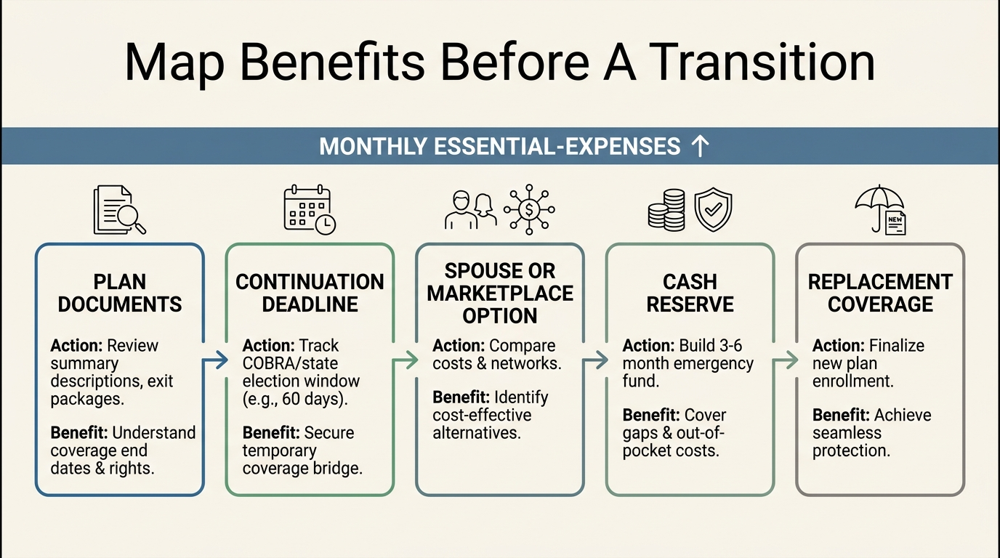

Job Loss Hurts More When Benefits Are Not Portable
A layoff is not only an income interruption. It can reprice health insurance, halt retirement contributions, end employer-paid life and disability coverage, and force a household to make time-sensitive decisions while cash flow is already under pressure.
The Bureau of Labor Statistics reported that 72% of private-industry workers had access to medical care benefits in March 2025. Access is not portability. When coverage is tied to the employer, a separation can move a benefit from payroll deduction to a direct household expense at the same moment wages stop.
The benefits cliff has a calendar
The Department of Labor says COBRA can preserve group health coverage after job loss for eligible workers, but the household usually pays the full premium plus up to a 2% administrative fee. COBRA applies to qualifying plans and is temporary. It is a continuity option, not a promise that the prior employer subsidy continues.
Coverage alternatives have deadlines. A spouse's plan may permit special enrollment, and Marketplace coverage can be available after loss of job-based coverage. The right choice depends on network, prescriptions, deductibles, subsidies, and the family’s next likely employment date. Those are decisions that should be mapped before a notice arrives.

What households should inventory now
List each employer-linked benefit, the monthly employer contribution, the continuation rule, and the document or phone number needed to act. Include health, dental, vision, life, disability, retirement matching, health savings account rules, and unused paid leave. Do not assume every benefit can follow the worker or that every policy has the same deadline.
Then run a cash-flow test using the higher post-separation cost, not the payroll deduction that appears on a pay stub. A reserve that covers six months of rent but not the loss of an employer health contribution is smaller than it looks.

Job security is not the same as benefit security. A resilient household knows what stops, what continues, and what must be funded immediately.
Use the free Explorer to stress-test the gap
WealthMeter's free Explorer cannot choose insurance coverage. It can help make the balance-sheet and cash-flow baseline visible before a transition forces a rushed decision.
| Known | What follows |
|---|---|
| Medical benefits are widely employer-linked in private industry. | Job loss can alter household expenses as well as income. |
| COBRA may preserve coverage, often at the full group cost plus 2%. | Continuity has a cash-flow price. |
| Enrollment rights have timing rules. | Keep plan contacts and documents accessible before a transition. |
Sources
Bureau of Labor Statistics, Employee Benefits in the United States, March 2025.
U.S. Department of Labor, Protecting Retirement and Health Benefits after Job Loss.